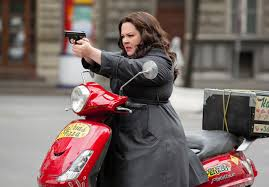

SPY
Muy alejada del humor blanco y con estilo de la serie “El Súper Agente 86”, “Spy” ofrece una narrativa confusa y una infinidad de lugares comunes.
Con Melissa McCarthy como una agente de la CIA que pasa de los escritorios a la acción, la película promete más de lo que cumple.
También participan Jude Law y Jason Statham, aunque este último tiene un papel sin fuerza ni chispa.
¿Qué pasó ayer?
Tres amigos despiertan de una despedida de soltero en Las Vegas, sin poder recordar la noche anterior y con la noticia de que el novio ha desaparecido.
Ahora tendrán que encontrar al novio antes de la boda y responder a la gran pregunta: ¿Qué pasó ayer?

¿Dónde están las rubias?
Dos agentes del FBI en desgracia se infiltran en la alta sociedad para proteger a unas herederas de hoteles.
Las hermanas Wilson son el objetivo de un complot de secuestro, y estos agentes harán lo impensable para resolver el caso.